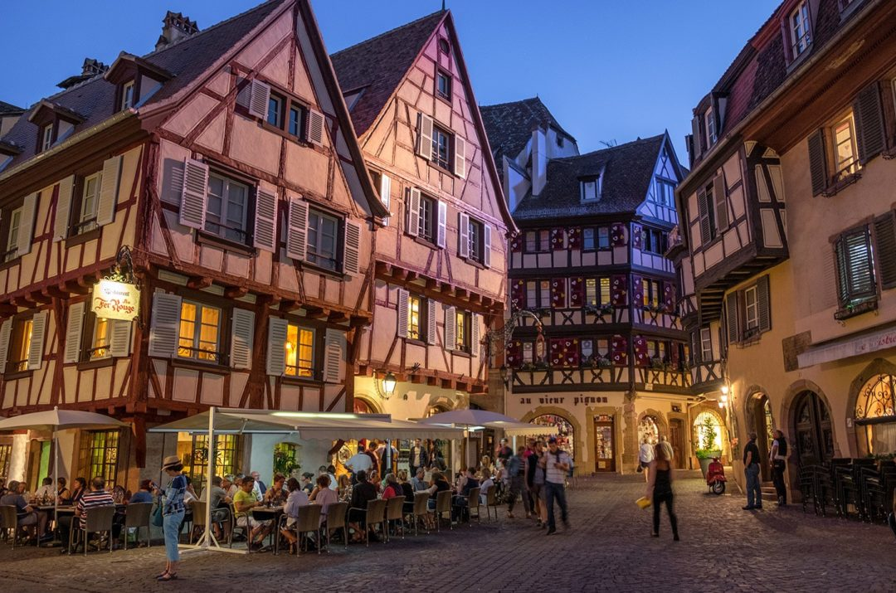

Colmar, Frankrike
Colmar besökte jag i somras och tyckte mycket om staden för den har en speciell stämning som en fantasy-bok eller dataspel. Dessutom var folket där varmt och vänligt trots att franska var enda språk som vissa av dem pratade.

De senaste två åren har jag läst webbutveckling på en folkhögskola. Under utbildningen använde jag HTML, CSS, JavaScript, TypeScript, React, Vue3 till både uppgifterna och mina egna projekt.
- Musik - spelar trummor, piano, och lite bas. Komponerar ibland också.
- Språk - vill lära mig franska, spanska osv i framtiden.
- Padel - trots att jag inte är bra på idrott tycker jag att det är kul att försöka träffa bollen!
- Matlagning/bakning (ibland) - speciellt när jag får testa nya recept. Gärna maträtter från olika länder.
- Caféer/konditorier - vill alltid testa olika caféer och konditorier när jag besöker andra städer.
- Sakiko Kawahara